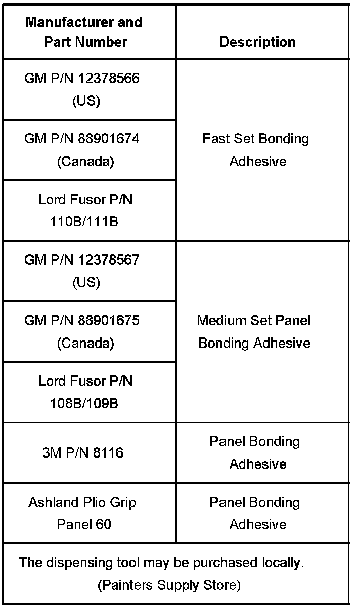

Body - Metal Panel Adhesive Bonding Information
Bulletin No.: 02-08-98-001CDate: October 09, 2006
INFORMATION
Subject:
Metal Panel Bonding
Models:
2007 and Prior GM Passenger Cars and Trucks (Including Saturn)
2003-2007 HUMMER H2
2006-2007 HUMMER H3
2005-2007 Saab 9-7X
2007 and Prior Isuzu Medium Duty Commercial Trucks
Attention:
This bulletin applies to all models that have published panel bonding procedures in SI.
Supercede:
This bulletin is being revised to update the applicable models and add information. Please discard Corporate Bulletin Number 02-08-98-001B (Section 08 - Body and Accessories).
This bulletin is intended to provide general information for adhesive bonding of Non-Structural exterior panels as an alternative to MIG welding. Panel bonding may be seen as an alternative to MIG welding to provide full panel replacement in regards to collision repair procedures. The benefits of panel bonding include the following:
No heat or burn damage when additional welding is not required
Corrosion protection
Can act as a sealant
Improved process for complicated shapes (wheelhouse area)
The General Motors specification for metal bonding adhesives is GM 6449G and provides test and standards information to adhesive manufacturers and suppliers. The scope of this specification is intended to provide the performance guidelines of structural adhesive systems used to repair (metallic) automotive bodies in the aftermarket. These types of adhesives are intended for use when bonding Non-Structural replacement body panels as an option to welding as the attachment means. Supplier guidelines outline the use of room temperature cure acrylic adhesives that contain glass bead technology.
Bonding procedures in general are applicable only to a factory seams type approach. Sectioning or partial paneling of full panels is not supported by General Motors unless specifically documented in a Service Bulletin or Manual.
Applicable components for this technology are NON-STRUCTURAL EXTERIOR PANELS ONLY, including door skins, tail panels, roof outer panels and quarter panels. While this bonding process has gained popularity, General Motors only supports this process for vehicles which it has published written repair procedures that are found in a Service Manual or Bulletin.

Adhesives currently meeting the performance requirements include General Motors materials, Lord Adhesives, Ashland Plio Grip, and products manufactured by 3M Corporation. At this time, ONLY the adhesive products shown meet this guideline.
Service information is also available on the web.
(www.acdelcotechconnect.com) - This website includes service repair information for the total vehicle and is a subscription based site.
(www.techinfo.gmgoodwrench.com) - This website includes select collision repair information only and is downloadable and free to the user.

Disclaimer